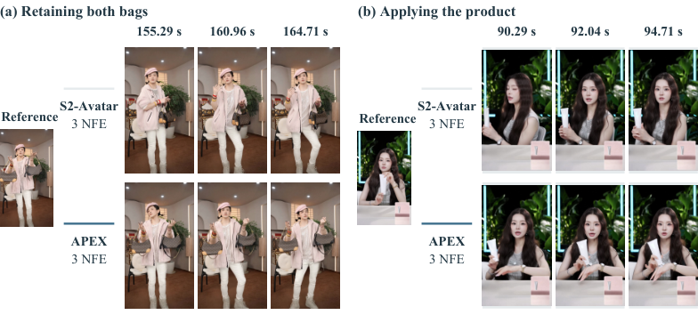

Paper Notes
What Is Removed from DMD?
DMD 需要知道两件事：参考分布希望样本往哪里变化，以及当前生成器自己的样本分布是什么样。冻结教师提供前者，独立 fake-score 网络在生成样本上学习后者。生成器通过两个估计的差得到更新信号。fake 在这里是“生成分布”的简称，不是用于鉴别真假视频的二分类器。
这篇工作把 APEX 的 condition shifting 接到 S2-Avatar 的流式训练中：生成器和 fake 估计器共享参数 θ，冻结教师仍使用另一组参数 φ。默认还共享 AdamW 状态。少一套可训练网络不等于没有教师，也不等于训练时只有一次前向传播。
视频条件包含参考图、文本、历史状态及相应音频，模型以因果块为单位生成。目标不仅是让每块单独清晰，还需要在模型自己产生的历史下继续生成。这正是 Self-Replay Forcing 被保留的原因。
Paper Notes
Condition Shifting Is a Role Selector
作者在进入 transformer blocks 前，对投影后的文本向量 c 取负，得到 c_shift=−c。使用 c 时执行生成；使用 −c 时，对同一文本所生成的样本拟合 fake velocity。两种调用使用正的噪声时间，并不是把时间反向，也不是让模型生成文本语义的反义场景。
一个可理解的类比是：相同程序接收两个不同模式标记，执行不同任务。但它不是无条件可靠的开关，网络必须通过相应监督学出两个角色。参数共享会引入任务间干扰，论文实验只能说明该设置在其训练体系中可用，不能证明任何条件变换都有效。
线性流路径采用 y_t=(1−t)x+tε，t=1 为噪声，t=0 为干净 latent。速度监督为 ε−x，干净预测是 y_t−tFθ。对一段生成结果 xθ，先停止梯度再重新加噪，然后用 −c 分支回归 ε−sg(xθ)。这样 fake 更新只训练估计调用，不会反向修改产生这个样本的计算图。
y = (1 − t′) sg(xθ) + t′ ε v_fake = Fθ(y, t′, −c) L_fake = E MSE(v_fake, ε − sg(xθ))
Paper Notes
How the Generator Receives a Gradient
教师与 fake 估计器在相同 noisy latent、相同 scoring time t′ 上预测干净结果，分别记为 x̂_real 和 x̂_fake。两者的差为 t′(v_fake−v_real)。作者沿用 S2 的归一化构造校正量 d̃，再把 sg(xθ+d̃) 当作生成器回归目标。归一化和估计器预测都在停止梯度的一侧。
附录 B.3 给出归一化：w=mean|xθ−x̂_real|，d̃=(x̂_real−x̂_fake)/w。均值沿继承的视频 mask，在每个视频的完整 scoring 序列上计算，包含 detach 的前缀，而不是每块独立计算。前缀虽然不接收梯度，仍可能通过目标的数值和归一化影响活动片段更新。
这一步的重点是“目标数值来自当前生成器，目标梯度却不经过它”。为了看清梯度，下面用 1/2 平方范数写教学简化式，暂时省去论文的 MSE 平均、视频权重与期望。对 xθ 的导数是 −d̃；对参数的导数为 −Jθ(xθ)ᵀd̃。若忘记 stop-gradient，xθ 同时出现在两侧会改变这个梯度，甚至使预期的回归更新抵消。
随后交替进行 fake 更新与生成更新，二者更新的是同一 θ，但经过不同的计算路径。完整生成目标还包含原系统的感知正则。共享参数不会取消 detach 的必要性；恰恰因为共享，更要明确每一步哪些张量只是目标。
附录中的 score/velocity 等价关系依赖线性 OT 路径；把估计场视为真实分布 score 还需要校准及共同条件等假设。不能因为公式存在，就把有限训练下的两个网络输出当成精确的 KL 梯度。
L_score = E MSE(xθ, sg(xθ + d̃)) Teaching form: ℓ = ½ ||xθ − sg(xθ + d̃)||² ∂ℓ/∂xθ = −d̃; ∇θℓ = −Jθ(xθ)ᵀd̃ L_generator = L_score + L_perc
Paper Notes
Replay Segments and Inference Budget
Self-Replay Forcing 先生成一个 detach 的自回归 rollout，再抽取片段、重新加噪，通过一次可微的因果前向得到训练输出。片段内部允许跨块梯度；片段以外的历史与原始 rollout 不反传。它在训练中暴露模型自己造成的历史分布，同时避免对整段长视频保留计算图。
例如选中第 4–6 块作为活动片段：第 6 块可通过片段内连接的表示影响第 4–5 块对应的计算，但不会穿过 detach 前缀追溯到最初整段 rollout。replay 的 t_i 可按块不同；重新评估 fake 分布时使用的 t′ 则在该序列各块间一致。它们不是推理时的 NFE。
推理只用正常文本条件生成，不调用 fake 模式或教师。主实验每块 3 次 backbone 去噪评估，另加一次 2× 空间 Refiner；KV-cache 编码和更新不计入 NFE。最终分辨率为 1344×768。因此“3 NFE”不表示整个系统只有三次网络调用，也不等于端到端延迟。
训练数据与处理继承 S2-Avatar，覆盖直播、说话人、影视、舞蹈和动画。附录说明对背景做稳定化，并排除大幅或复杂相机运动。它的长期交互视频结果不能直接外推到自由导航的三维世界模型。
Paper Notes
Reading Figure 3 and the Evaluation Protocol

Deyuan Liu et al. · Original Figure 3 · CC BY 4.0 · Unmodified · Paper & Caption ↗
原图展示相同参考图、时间点和 Refiner 下的成对结果：一组观察后期是否还保留两个包，另一组观察涂抹指令是否带来手部动作变化。这些例子有助于理解“物体保持”和“响应指令”的含义；挑选出的可视化本身不能代表整体胜率。
StreamAV-Bench 包含 Progressive 与 Interactive 各 160 个场景，输出均长 180 秒；Interactive 在 30、60、90、120、150 秒更新条件。部分指标由 Gemini 评分，视觉美学用 LAION predictor，音画同步用 Synchformer 的偏移误差。必须分别理解评估器偏好与真实物理一致性。
表 1 的 VIF/AIF/SC/BC 只用 Progressive，其余列合并两条轨道；表 2 则提供每轨及全部 320 案例的结果。不能把两个表的 VIF 直接当成重复计算出不同答案。主实验 Progressive VIF 是 3.856 对 3.831，整体 VIF 是 3.891 对 3.834。
Paper Notes
Results, Trade-offs, and Confounded Ablations
总体视觉美学 VA 从 0.632606 升到 0.641898，但总体视觉质量 VQ 从 3.267 降到 3.256，音画同步误差从约 1.319 秒升到 1.341 秒。主体一致性和音频质量也没有同步提升。所以合适的结论是指令响应与美学收益伴随其他维度的取舍。
人工评估为 70 对 180 秒视频。指令遵循 22 胜、47 平、1 负，净偏好为 100×(22−1)/70=30%，不是“70% 的人更喜欢”，也不是排除平局后的胜率。一致性与视频质量各只有 3 个净胜样本，对应 +4.3%；运动质量是 −8.6%，两模型可用视频均为 62/70。
匹配训练设置下，峰值 allocated 显存每 GPU 从 102.7 降到 98.2 GiB，平均迭代时间从 35.9 降到 32.6 秒。这些是实测训练收益，不能把“去掉一套网络”推断成显存减半，也不能当作视频推理加速。
2 NFE 的指令偏好仍为正，但其余人工维度相对 3 NFE 的 S2-Avatar 为负。优化器消融中，共享状态用 3 NFE、分离状态用 2 NFE；预算并未固定，因此不足以单独归因于是否共享 AdamW 状态。不同轮次都与共同基线比较，也不等于变体彼此直接成对评估。
Paper Notes
What to Carry into Further Reading
个人理解：这篇最有价值的设计是分离“网络数量”和“学习角色数量”。多个统计任务可以共享参数，但必须明确条件选择、训练分布与梯度边界。它与前面读过的蒸馏笔记形成一个有用的比较轴：减少采样步数、减少训练网络、改善长时分布偏移，是三个不同目标。
对流式记忆研究有直接方法论启发：不能仅凭缓存被读取，就断言未来误差训练了过去的写入。这里作者明确只在活动 replay 片段内保留梯度；要迁移到重建，需要逐段检查 detach 与缓存构建。本文没有涉及语义重建损失，也没有证明共享估计器会改善几何 memory。
下一步复现首先需要相同 S2 数据与教师接口、感知正则以及校正归一化细节。这篇笔记的梯度解释依据论文，不代表已核验公开训练代码。优先问的是在同推理预算、同数据、同训练步数下，角色共享能否稳定复现成本收益，而不是把单一偏好指标扩大成全面优越。
Discussion
Reading Questions
Does negating the text mean negating the instruction?
不是。取负作用于投影文本向量，用于选择训练出来的 fake-estimation 角色，拟合的仍是原指令对应的生成分布。
Why detach a target made by the same network?
因为生成更新需要把校正量视作固定方向；否则求导会进入目标构造，改变预期的梯度。
Does training backpropagate through all 180 seconds?
没有这个结论。原 rollout 和片段外历史停止梯度，活动 replay 片段内才允许跨块反传。
Is the evidence a uniform quality improvement?
不是。指令遵循和美学较好，但运动、同步及部分整体指标较差；可用率相同。
References
Figure 3 is reproduced without modification from Liu et al., arXiv:2611.14033v1, under CC BY 4.0. The simplified gradient calculation is explanatory, not an additional paper result.
Verified on 2026-11-26. Paper results refer to the linked versions. Repository references were checked on this date.